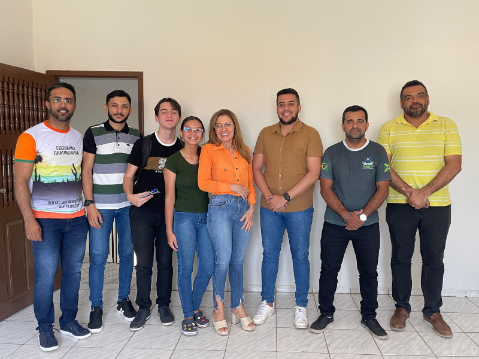
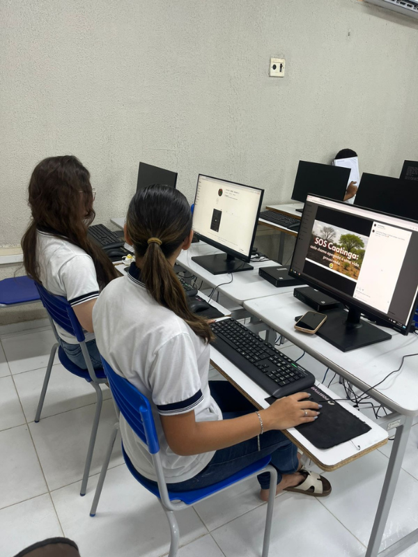

Início do
Projeto
Escolha da Temática

Encontros de orientação
Discussões sobre o projeto.
Nessa fase, o desenvolvimento do trabalho estava sendo orientado pelos professores que acompanhavam e direcionavam as etapas da pesquisa.
Visita a SUDEMA
Visita à Superintendência Municipal de Defesa do Meio Ambiente (SUDEMA), no município de Icó-CE.


Visita a Defesa Civil
Visita a Defesa Civil do município de Icó- CE.
Aplicação do questionário
Aplicação do questionário para saber como os/as estudantes compreendem a questão das queimadas e quais os impactos ambientais, sociais e econômicos são associados a ela.

Disseminação nas Redes Sociais
Criação e divulgação do Instagram do projeto: @cearasemfogo